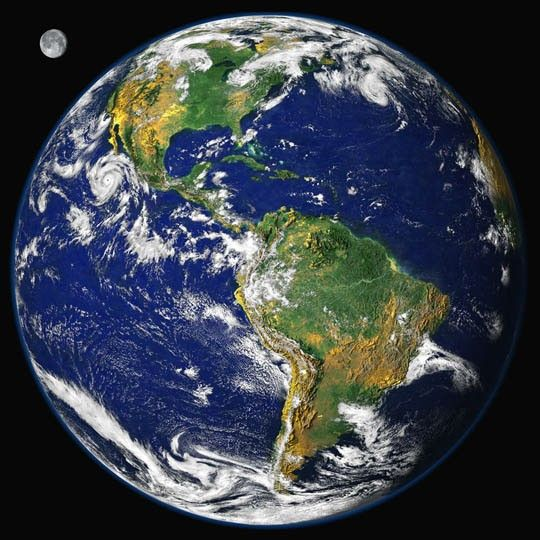
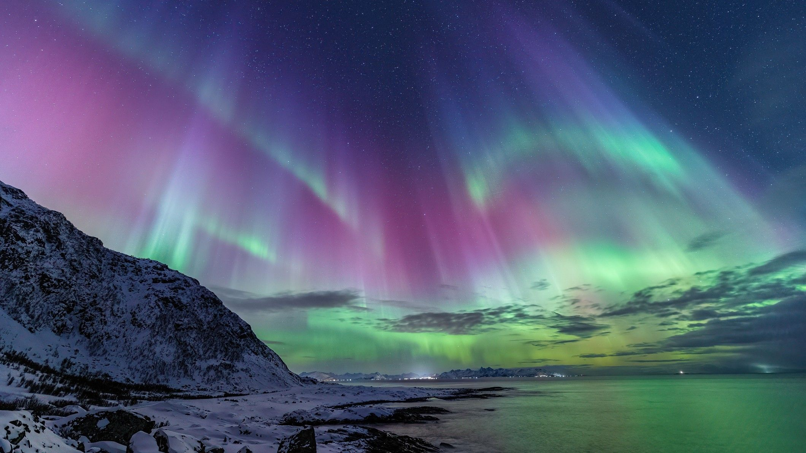

Earth is the only known planet in the universe confirmed to support life. About 71% of its surface is covered by oceans, while the remaining land is divided into seven continents. Protected by a strong magnetic field and a life-supporting atmosphere, Earth provides ideal conditions for millions of species, including humanity.
Earth is the fifth-largest planet in the Solar System and the largest of the rocky planets.
Surface Water
71%
Oceans cover most of Earth's surface and play a crucial role in regulating climate.
Atmosphere
78% N₂
Earth's atmosphere is primarily composed of nitrogen and oxygen, making life possible.
Natural Moon
1
Earth has one large natural satellite that stabilizes its rotation and creates ocean tides.
Earth Overview
Earth is the third planet from the Sun and the only known world that supports life. Formed approximately 4.54 billion years ago, Earth contains liquid water, a breathable atmosphere, an active geology, and a protective magnetic field. These characteristics have allowed millions of species to evolve and flourish, making Earth unique among all known planets.
Planet Classification
Planet Type — Terrestrial Planet
Solar System Order — 3rd Planet
Average Distance — 149.6 Million km
Orbital Period — 365.25 Days
Rotation Period — 23h 56m
Average Orbital Speed — 29.78 km/s
Axial Tilt — 23.44°
Physical Characteristics
Diameter — 12,742 km
Radius — 6,371 km
Mass — 5.97 × 10²⁴ kg
Density — 5.51 g/cm³
Surface Gravity — 9.81 m/s²
Escape Velocity — 11.19 km/s
Natural Satellites — 1 (Moon)
Environment
Surface Water — 71%
Land Area — 29%
Average Temperature — 15°C
Atmosphere — Nitrogen & Oxygen
Magnetic Field — Strong Global Field
Known Life — Millions of Species
Continents — 7
Earth's Oceans
Earth is often called the "Blue Planet" because approximately 71% of its surface is covered by water. Oceans regulate climate, transport heat around the globe, generate much of Earth's oxygen through microscopic marine organisms, and provide habitats for an enormous diversity of life.
Surface Water
71%
Most of Earth's surface is covered by interconnected oceans.
Ocean Count
5
Pacific, Atlantic, Indian, Southern, and Arctic Oceans.
Deepest Point
10,935 m
The Challenger Deep in the Mariana Trench is Earth's deepest known location.
Fresh Water
2.5%
Only a small fraction of Earth's water is fresh and accessible.
The Seven Continents
Earth's land is divided into seven continents, each with unique climates, ecosystems, geology, and cultures. The movement of tectonic plates slowly changes the positions of these continents over millions of years.
Continents
Africa
Antarctica
Asia
Europe
North America
Australia
South America
Tectonic Plates
Earth's crust is broken into large moving plates that create mountains, earthquakes, volcanoes, and ocean basins through plate tectonics.
Highest Point
Mount Everest reaches approximately 8,849 meters above sea level.
Atmosphere
Earth's atmosphere protects life by blocking harmful solar radiation, regulating global temperatures, and providing the gases required for respiration and photosynthesis.
Nitrogen
78%
Nitrogen is the most abundant gas in Earth's atmosphere.
Oxygen
21%
Oxygen supports respiration for most complex organisms.
Argon
0.93%
Argon is the third most abundant atmospheric gas.
Carbon Dioxide
0.04%
Although present in small amounts, carbon dioxide plays an important role in regulating climate.
Magnetic Field
Earth's magnetic field is generated by the movement of molten iron within its outer core. This invisible shield protects the atmosphere and surface from harmful charged particles carried by the solar wind.
Protection
The magnetosphere deflects much of the solar wind, helping preserve Earth's atmosphere.
Auroras
Interactions between charged particles and Earth's magnetic field create the spectacular Northern and Southern Lights.
Navigation
Earth's magnetic field allows compasses to point toward magnetic north, aiding navigation.
Internal Structure
Earth is composed of four primary layers: the crust, mantle, outer core, and inner core. Heat from the interior drives plate tectonics and volcanic activity.
Crust
The thin rocky outer shell where continents and oceans exist.
Mantle
A thick layer of slowly flowing rock responsible for tectonic motion.
Outer Core
A liquid iron-nickel layer that generates Earth's magnetic field.
Inner Core
A solid iron-nickel sphere with temperatures comparable to the Sun's surface.
Earth's Moon
Earth has one natural satellite, the Moon. It influences ocean tides, stabilizes Earth's axial tilt, and has played an important role in scientific exploration and human spaceflight.
Average Distance
384,400 kilometers from Earth.
Orbital Period
27.3 Earth days.
Historic Achievement
Apollo 11 became the first mission to land humans on the Moon in 1969.
The Biosphere
Earth is the only known planet with confirmed life. Its biosphere includes microorganisms, plants, fungi, animals, and humans living across oceans, forests, deserts, mountains, rivers, and polar regions. The interaction between living organisms and Earth's atmosphere, oceans, and geology forms a complex and interconnected planetary system.
Climate & Weather
Earth's climate system is driven by interactions between the atmosphere, oceans, land, ice, and living organisms. Energy from the Sun powers weather patterns, while ocean currents redistribute heat around the globe. Earth's moderate climate has enabled life to flourish for billions of years.
Average Temperature
15°C
Earth's global average surface temperature supports liquid water and diverse ecosystems.
Climate Zones
5
Polar, temperate, continental, tropical, and dry climate regions exist across Earth.
Highest Temperature
56.7°C
The highest reliably recorded air temperature was measured in Death Valley, California.
Lowest Temperature
-89.2°C
The coldest recorded temperature occurred at Vostok Station in Antarctica.
Human Space Exploration
Since the beginning of the Space Age, humanity has launched thousands of satellites, robotic probes, telescopes, and astronauts into space. Observing Earth from orbit has transformed weather forecasting, communications, navigation, environmental monitoring, and scientific research.
Artificial Satellites
Thousands of operational satellites orbit Earth, supporting communication, GPS, weather forecasting, Earth observation, and scientific research.
International Space Station
The International Space Station serves as a continuously inhabited laboratory where astronauts conduct research in microgravity.
Future Exploration
Knowledge gained from studying Earth helps scientists prepare for future missions to the Moon, Mars, and beyond.
Timeline of Exploration
1957
Sputnik 1 became the first artificial satellite to orbit Earth.
1961
Yuri Gagarin became the first human to orbit Earth.
1969
Apollo 11 successfully landed humans on the Moon after launching from Earth.
1990
The Hubble Space Telescope began observing the universe from Earth orbit.
1998
Construction of the International Space Station began.
Present Day
Earth continues to be monitored by advanced satellites studying climate, oceans, forests, atmosphere, and natural disasters.
Natural Wonders
Earth contains extraordinary natural landscapes shaped by billions of years of geological activity, erosion, volcanic processes, and biological evolution.
🌊 Oceans
The Pacific Ocean is Earth's largest and deepest ocean.
🏔 Mountains
Mount Everest is the highest mountain above sea level.
🌳 Forests
The Amazon Rainforest is the world's largest tropical rainforest.
❄ Polar Ice
Antarctica stores approximately 70% of Earth's freshwater as ice.
Interesting Facts
🌍 Blue Planet
Earth appears blue from space because most of its surface is covered by oceans.
🌙 One Moon
Earth has one natural satellite that influences tides and stabilizes the planet's rotation.
🧲 Magnetic Shield
Earth's magnetic field protects life from much of the harmful solar wind.
🌱 Only Known Life
Earth remains the only confirmed planet known to support life.
🌋 Active Planet
Earth is geologically active with moving tectonic plates, earthquakes, and volcanoes.
☀ Habitable Zone
Earth orbits within the Sun's habitable zone, allowing liquid water to exist on its surface.
Scientific Importance
Earth is the foundation of planetary science and the benchmark used to compare other worlds throughout the Solar System and beyond. By studying Earth's atmosphere, oceans, geology, climate, magnetic field, and biosphere, scientists gain insights into planetary evolution, habitability, and the search for life elsewhere in the universe.
Planetary Science
Earth serves as the primary reference planet for understanding rocky worlds.
Climate Research
Continuous observations improve understanding of weather systems and long-term climate patterns.
Life Sciences
Earth is the only known planet where complex ecosystems have evolved.
Space Exploration
Every human space mission begins with knowledge gained from studying our home planet.
Earth: Our Home in the Universe
Earth is the only known planet where life exists. It formed approximately 4.54 billion years ago and has continuously evolved through geological activity, atmospheric changes, biological evolution, and interactions with the Sun and Moon. Earth serves as humanity's home and remains the primary laboratory for understanding planetary science, climate systems, geology, biology, and the possibility of life elsewhere in the universe.
Earth's unique combination of liquid water, a stable atmosphere, moderate temperatures, active plate tectonics, and a protective magnetic field has created conditions suitable for life for billions of years. Oceans regulate climate by storing and redistributing heat, while forests, wetlands, and grasslands maintain Earth's ecological balance through the carbon cycle and oxygen production.
The interaction between Earth's atmosphere, oceans, land, ice sheets, and living organisms creates an incredibly dynamic planetary system. Weather patterns, ocean currents, volcanic eruptions, earthquakes, and biological processes continuously reshape our planet. Modern satellites allow scientists to monitor these changes in real time, improving weather forecasts, disaster response, and environmental protection.
Earth is also humanity's gateway to the universe. Every astronomical discovery, space mission, and planetary exploration effort begins here. Knowledge gained from studying Earth helps scientists understand Mars, Venus, icy moons, distant exoplanets, and the processes that govern planets throughout the Milky Way.
Earth Gallery
Representative scientific imagery and visualizations of Earth.

Blue Marble
Earth photographed from space showing oceans, continents, and clouds.

Aurora
Colorful auroras created when charged particles interact with Earth's magnetic field.
Earth at Night
City lights reveal the distribution of human civilization across the planet.
Frequently Asked Questions
Why is Earth the only known planet with life?
Earth has liquid water, a protective atmosphere, moderate temperatures, essential chemical elements, and a strong magnetic field that together create favorable conditions for life.
Why is Earth called the Blue Planet?
Around 71% of Earth's surface is covered by oceans, making the planet appear blue when viewed from space.
How old is Earth?
Scientific evidence indicates Earth formed approximately 4.54 billion years ago.
Does Earth have rings?
No. Earth does not have a planetary ring system.
How many moons does Earth have?
Earth has one natural satellite—the Moon.
Can Earth lose its atmosphere?
Earth's gravity and magnetic field help retain and protect its atmosphere, although small amounts of atmospheric gases escape into space over time.
Scientific References
NASA Earth Observatory
NASA Solar System Exploration
NOAA (National Oceanic and Atmospheric Administration)